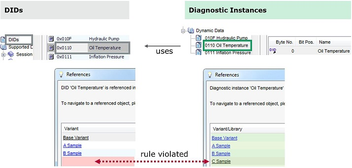
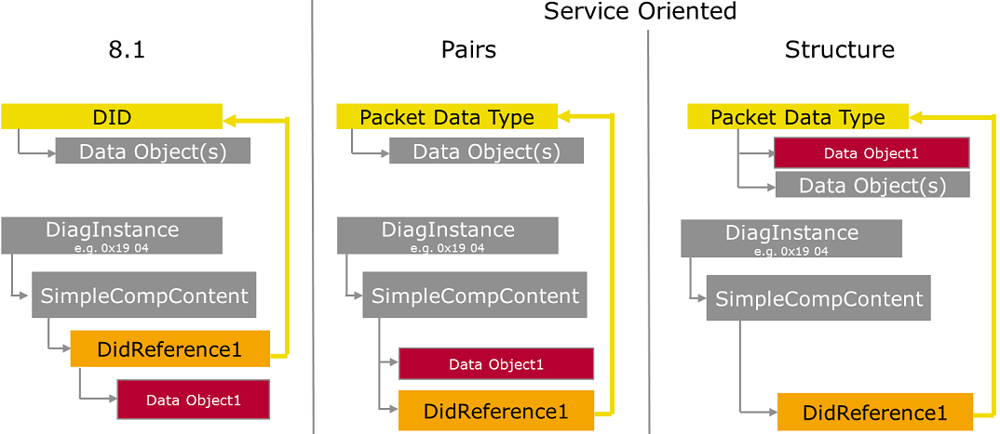

Overview: Variants, DIDs and Diagnostic Instances
UDS Annex C.1:
“The parameter dataIdentifier (DID) logically represents an object (e.g., Air Inlet Door Position) or collection of objects. This parameter shall be available in the server’s memory. … In general, a dataIdentifier is capable of being utilized in many diagnostic service requests including 0x22 (readDataByIdentifier), 0x2E (writeDataByIdentifier), and 0x2F (inputOutputControlByIdentifier). A dataIdentifier is also used in various diagnostic service responses (e.g., positive response to service 0x19 subfunction readDTCSnapshotRecordByDTCNumber).
Important – Regardless of which service a dataIdentifier is used with, it shall consistently represent the same thing (i.e., a given object with a given size / meaning / etc.) on a given ECU.”
Overview: Variants, DIDs and Diagnostic Instances
[DID-R001] In the CANdela data model, DIDs are defined within a variant:
DIDs are used in Fault Memory...
One ECU can support multiple protocols (e.g. an emission related ECU with UDS and OBD, or a gateway).
Note: some combinations of protocols may be considered invalid.
Identifier values are typically required to be unique within an Identifier Scope (e.g. KWP: Local Identifiers vs. Common Identifiers).
| Protocol | Identifier, Scope |
|---|---|
| UDS | Identifier (2 byte) |
| Specialization: WWH-OBD | Ditto |
| KWP | Local Identifier Common Identifier Mixed in special service 0x2C: 0x2C 01 LocalIdentifier 0x2C 02 CommonIdentifier 0x2C 03 MemoryAddress |
| OBDII | MID, TID, PID (1 byte) |
| J1939 | PGN (18/19 bit) |
| Service Signature | Service Name | DID Identifier Range |
|---|---|---|
| UDS | (see ISO 14229-1) | |
| 22 yy xx 2E yy xx 2F yy xx |
ReadDataByIdentifier WriteDataByIdentifier InputOutputControlByIdentifier |
yy xx (for range details see the UDS spec) |
| 2A xx | ReadDataByPeriodicIdentifier | F2 xx |
| 2C xx | DynamicallyDefineDataIdentifier | F3 xx |
| OBDII | (see ISO 15031-5) | |
| 01 nn | PID | F4 nn |
| 06 nn | On-board monitoring | F6 nn |
| 09 nn | Info type | F8 nn |
Restrictions for UDS services:
Restrictions for OBDII services:
Examples
See the CANdela ECU settings for Multiple Identifier Request.
In Expert View in a template, you can enforce the use of DIDs in a diagnostic class template, by setting a semantics at the Combined Component which controls one telegram table in each diagnostic instance of the diagnostic class:
[DID-R050 Combined Component DID Semantics] the Combined Component semantics shall be:
Each of this semantics values can occur multiple times in a document (as opposed to 8.0 where „DID Definition“ is allowed only once, cf. CDC-33807).
[DID-D001 DID Used] DIDs are used by
[DID-D005.0 DID Referenced] a DID exists in one or multiple variants (here and in the following: or libraries - CDS-37946 8.5 SP2). If it exists in multiple variants, we say it is referenced in these variants.
[DID-D020 Consistency Rule for References] ("Onion Rule")
A DID must be referenced at least in those variants in which the diagnostic instance that uses it is referenced.
Example (see diagram below):

Consistency Rule for Diagnostic Instance and DID References (Sharing)
Motivation for the rule: e.g. when inspecting data used in a test system, users require that a diagnostic instance referenced in multiple variants is completely equal in these variants, including all used DIDs, data objects and data types. This is given when the DID is referenced in the variants.
[DID-D210 DID Identity and Authorization]
Motivation: authorization is typically defined for a DID in the base variant in the template. The template contains only the base variant. In a document, authorization propagates to all instances of the DID in other variants.
1. DID A in one variant and DID B in another variant are considered “the same DID” (identity) if they have the same qualifier.
2. DID "required" authorization applies to the “DID per se”, i.e. to the “same DID” in all variants in which it exists, not to one variant only.
DID "modifiable" authorization applies to the “DID instance”, i.e. to DID in all variants in which it is referenced (like for diagnostic instances). As a consequence, if authorization allows deletion of a DID, and you delete and re-create the DID, modification is possible for the new DID as a default. If this is not desired, you have to forbid deletion of the DID.
3. If you modify the DID qualifier in one variant only, the DID becomes another “DID per se”. If that DID existed already, the authorization of that DID applies.
[DID-D212 Identifiers Correspond]
a DID Identifier corresponds with a diagnostic instance identifier iff. the DID identifier and the diagnostic instance service signature are related as described in Identifiers in UDS and OBD Services for all services except 2A and 2C.
Example:
A DID Identifier 0x0207 corresponds with a diagnostic instance having signature 22 02 07, 2E 02 07, 2F 02 07, 01 07, 06 07 or 09 07.
A DID Identifier 0xF207 corresponds with no diagnostic instance since it is in the range for service 0x2A.
[DID-D214.0 DID and Diagnostic Instance Correspond]
A DID and a diagnostic instance within a variant correspond if
a) the diagnostic instance references the DID via a single DID Data Reference in the first combined data component, and
b) the DID Identifier and the diagnostic instance identifier correspond [DID-D212]
[DID-D300.0 Order of the Variants]: Base variant, ECU variants.
Note: for libraries (8.5 SP2, CDS-37946) see [LIB-R060].
[DID-D310 Variant Suffix]: an 8.2 DID qualifier can encode the qualifier Q of an 8.5 DID which occurs first [DID-D300] in Variant V as follows: Q[8.2] = Q + “_” + V,
ditto the name: N[8.2] = N + “ ” + V
V is the longest matching suffix (for variants “A” and “A_B” and “B”, the suffix “A_B” matches variant “A_B”).
Example:
8.2:
DID 0x10, Temperature
DID 0x10, Temperature_ASample (*)
DID 0x10, Temperature_BSample
DID 0x11, EngineSpeed_ASample8.5
Base Variant
DID 0x10, Temperature
ASample
DID 0x10, Temperature (*)
DID 0x11, EngineSpeed
BSample
DID 0x10, Temperature[DID-D320.0 Authorization Mapping]
| 8.2 deletable | 8.5 required in all variants |
|---|---|
| No | As reference |
| No | Yes |
| Yes | No |
[DID-R005.0 May Modify Allow Duplicate DIDs]: a document contains an authorization flag “may modify allow duplicate DIDs”, default true.
[DID-R008.0 Allow Duplicate DIDs]: a document contains a flag “allow duplicate DIDs”, default false.
The flag can be modified (in Standard and Expert View) iff. the authorization flag of R005 is true.
A DID has authorization properties:
[DID-R010 Modifiable] … (as in 8.2), default true. See [DID-D210] above.
[DID-R012 Required in all Variants] with the following possible values:
Relationship with DIDs in the 8.2 data model:
[DID-R020.0 Existence]: A DID exists (= is referenced [DID-D005]) in a Variant (here and in the following: or Library [LIB-R010-c]).
[DID-R025 Identifier]: A DID has an Identifier = an unsigned number in the range 0 .. 65535.
[DID-R030 Constraints]:
[DID-R030-a] the DID qualifier and name must be unique within a variant
Note: the consistency condition for the name does not apply to languages that are not up-to-date in the document.
[DID-R030-c] constraints check shall emit a warning (allow exports) if DID number is >= 2^16
[DID-R035]: in cross-document context, DIDs are associated by qualifier.
[DID-R040]: the same DID can exist (= be referenced [DID-R020]) in multiple variants (like a diagnostic instance in 8.2).
Note: this means that any changes of DID properties and DID Data apply to multiple variants.
[DID-R100]: if a DID is used by a DID Reference or DID Data Reference in a diagnostic instance, then the DID must be referenced [DID-R020], [DID-R040] in the variant.
[DID-R110]: if a DID is used by DTC Specific Snapshot Data in a diagnostic instance, then the DID must be referenced [DID-R040] in the variant.
[DID-R120]: If the diagnostic instance of [DID-R100] or [DID-R110] is referenced in n Variants (n>1), then the DID must be referenced [DID-R040] at least in these n Variants.
Note: this applies to de-activated diagnostic instances, too.
[DID-R130]: a DID used by Common Snapshot Data [DID-D001-a] must be referenced [DID-R040] in all Variants ([DID-R130-Lib] not necessarily in Libraries, CDS-68396 9.1).
[DID-R140]: a DID used by fixed data [DID-D001-e], [DID-D001-f] must be referenced [DID-R040] in all Variants.
Note: this means the ECU level fixed data references an object that exists in (multiple) variants.
[DID-R155]: a DID contains DID Data (= 8.1 R140.3):
Not allowed:
Note: to reuse data objects in multiple DIDs, the data objects can be defined in a Packet Data type (as usual in the CANdela data model).
[DID-R155-DefaultDisplay]: Showing DID Data within a line, e.g. in Snapshot Data [SRUI-R778], contains...
(reserved)()Example:
Note: a DID Data Reference represents DID Data only (not including the identifier).
[DID-R160]: CANdelaStudio provides a kind of data object (CDS-19553, 8.1): “DID Data Reference” with the following properties:
Semantics of the reference: the reference shall be handled like a reference to a packet data type that has “visible as structure” = true, not false. I.e. the reference shall not be “replaced” by the DID Data.
Motivation: this is necessary to avoid qualifier uniqueness violations if a telegram references the same DID twice, and it is compatible with the data model before 8.1 (avoid differences).
[DID-R163]: a DID Data Reference shall be allowed in the same contexts as a DID Reference (see [DID-R183]).
R165.0: - removed – with R185.[DID-R167]: template authorization “Variable length of data objects…” applies to DID Data References (treat a DID like a packet data type here).
[DID-R168]: in a telegram table, CANdelaStudio shall allow multiple DID Data References that refer to the same DID.
Note: a DID Reference represents the identifier + the DID Data.
[DID-R180]: CANdelaStudio provides a kind of data object (CDS-19553, 8.1): “DID Reference” with the following properties:
[DID-R182.5]: the DID Reference shall contain a data object that represents the DID number in a service oriented view:
the const number shall be initialized from the DID number 1:1 or by a heuristics (e.g. take low byte from UDS DID number in an OBD service with 1 byte ID)
a2) constraints check shall warn if the const number is not set (prevent from export)
a3) if the const number is missing, constraints satisfier shall fill it from the DID number
after creation, the data object shall be unique in the namespace of the telegram that contains the DID Reference.
a constraints check shall report a data object that is not unique in the namespace of the telegram that contains the DID Reference (warn, prevent from export).
the data object shall reference an identity data type (like in 8.0)
a list of possible data types shall for the DID number data object shall contain data types with the following properties: quantity atom, identity data type, 1 <= atom bit length < 3 bytes (including bit-sized data types in this size range), has maximum size.
a default data type shall be contained in the list of g) and have the following properties:
h1) for document ProtocolStandard “UDS”: atom bit length 2 bytes, and (qualifier substring “HexDump”, or: display format “hex”)
h2) for document ProtocolStandard “OBD2” or “KWP”: ditto with atom bit length 1 byte
h3) otherwise: the first 1-byte data type of g).
Note: the data type referenced by the data object defines the size of the DID number in the service.
[DID-R183 Consistency Conditions]:
[DID-R183-a] an object of type DID Reference shall in principle (if not forbidden by other constraints) be allowed in telegrams of any Combined Component semantics (not only for semantics “DID Reference”).
Motivation: allow use of the new DID feature in all documents, without changing semantics in template.
[DID-R183-b] an object of type DID Reference shall in principle (if not forbidden by other constraints ) be allowed in a diagnostic instance within a Multiplexer component.
Motivation: reference to DID in 0x19 04.
[DID-R183-c] an object of type DID Reference shall not be allowed within a complex data type in the global list.
Note: this does not forbid the Multiplexer in b).
Motivation: keep DIDs simple as top-level objects. Avoid that DIDs may lead to circular references (as packet data types may).
Note: there is a use-case for DIDs in a Mux data type - VW Extended Data Record 0x71 contains a DID Reference in an iteration. Solution sketch: specify DID Number data object, then Mux with selector that object, each case contains a reference to the respective DID.
[DID-R183-d] an object of type DID Reference shall in principle (if not forbidden by other constraints) be allowed in fixed data.
R185.0: - removed
[DID-R188]: in a telegram table, CANdelaStudio shall allow multiple DID References that refer to the same DID.
Note for CANoe: before 9.0 SP3 (2016-08), a DID Reference typically leads to duplicate qualifiers in CANoe:
CANoe 9.0 SP3 (DTLLIB-39381) instead uses the qualifiers from the following objects, which are unique due to R182 d):
Where to put the DID Number data object (cf. R182):

DID Reference: Data Model and Service Oriented View
the DID Reference shall be handled like a reference to a packet data type that has “visible as structure” = true, not false. I.e. the DID Data shall not “replace” the reference. Motivation: provide a namespace to avoid qualifier uniqueness violations.
in a service oriented view of the data (e.g. for export, or for migration to 8.0), the DID Reference logically represents a sequence:
This logical sequence may be represented by different concrete data structures, depending on the consumer of the data (see diagram above):
on top-level, the telegram contains pairs: first the DID Number data object, then the reference to the DID Data.
This is what the “DID reference with number” semantics forced in the data model of CANdelaStudio up to 8.0, and what CANdelaStudio 8.1 supports by checks:
Qualifier conflicts on telegram level between DID Number data objects and DID References are forbidden by R182 d) and e).
on top-level, the telegram contains only references to an additional data structure: DID Number data object + DID Data.
An export may need to export two structures for a DID: 1. one for the DID with DID Data, 2. an additional one that includes the DID number.
Qualifier conflicts within the new structure between the DID Number data object and the DID Data are not forbidden by the data model and must be handled by the client.
Procedures:
Features: